비서-2급 (2018-11-13 기출문제)
1과목: 비서실무
1. 비서가 수행하는 일정관리 업무 중 가장 적절하지 않은 것은?
- 거래처 방문이 많은 상사인 경우에는 방문 일정표를 별도로 만들어 상사가 지참할 수 있도록 한다.
- 스마트폰에 상사의 일정을 연동시켜 일정 확인 및 추가하며 관리한다.
- 상사의 일정이 확정되면 바로 비서 일정표에 기재하고, 사내 인트라넷에 임원들이 공유할 수 있도록 올려 둔다.
- Outlook, 구글, 네이버 등의 일정관리 프로그램, 휴대전화와의 연동, 그리고 종이로 된 다이어리 등 일정관리 도구를 활용하여 일정이 누락되는 실수를 방지한다.
(정답률: 82%)

2. 비서가 업무에 임하는 자세로 가장 부적절한 것은?
- 직무경험을 통한 의도적인 학습은 자기개발을 위한 매우 효과적인 방법이다.
- 직무 수행 과정에서의 학습은 지식, 기술, 경험의 증대로 현재의 직무 수행 능력을 향상시키며, 미래에 더 많은 능력을 맡을 수 있는 능력을 키우는 것이다.
- 문서 작성 시에 문서의 내용을 이해하면서 업무를 수행하는 것은 비효율적이므로 문서작성에만 집중함으로써 업무효율성을 높일 수 있다.
- 일상적으로 주위에서 일어나는 일에 대한 이해 외에도 회사의 상품과 업종에 대한 지식을 조사하고 배움으로써 자기개발을 할 수 있다.
(정답률: 83%)
3. 공장장이 제품불량 건을 보고하기 위하여 사장님과 통화를 요청하였다. 김비서는 외출 중인 상사에게 아래와 같이 휴대전화 문자보고 중이다. 다음 설명 중 가장 적절한 것은?
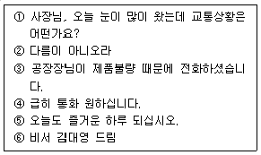
- 전반적으로 ①번에서 ⑥번까지 잘 작성되었다.
- ①번의 인사는 형식적인 것으로 항상 포함시키는 것이 예절바른 비서이다.
- ③번 또는 ④번을 맨 처음에 기술하여 용건을 먼저 보고한다.
- 휴대전화 문자보고보다는 운전기사에게 연락하여 상사와 통화를 요청한다.
(정답률: 64%)
4. 상사가 통화 중일 때 낯선 사람이 상사와 급하게 전화 연결을 해달라고 요청한다. 비서의 응대 방법 중 가장 적절한 것은?
- 상사가 현재 통화 중이므로 기다려 달라고 한 후 상사 통화종료 후 연결한다.
- 상사가 외부에서 들어오시는 중이므로 상사 귀사 후 상황을 상사에게 보고하겠다고 말씀드린다.
- 상대방에게 신분과 용건을 확인한 후 상사와 통화 가능한 시간을 알려준다.
- 잠시 기다려달라 하고 상대방의 이름과 용건을 통화 중인 상사에게 메모로 전달한 후 연결여부를 결정한다.
(정답률: 42%)
5. 상사가 주재하는 회의 참석을 위해 파트너 기업 임원진의 사내 첫 방문이 예정되어 있다. 다음 비서의 업무 중 가장 적절하지 않은 것은?
- 방문단 소속 회사 홈페이지 및 최근 뉴스 자료를 수집하였다.
- 회의에 참석할 사내 임원들이 회의 시작 10분 전 회의 장소에서 대기할 수 있도록 사전에 공지하였다.
- 방문단 수행 차량을 미리 확인하여 주차장 확보를 위해 해당 부서에 협조를 요청했다.
- 비서가 회의 장소에서 회의 준비를 하는 동안 방문단이 도착하게 되면 회의 장소로 안내해 달라고 안내데스크에 미리 전달 해 놓았다.
(정답률: 66%)
6. 다음의 내방객 응대 업무 수행 중 가장 부적절한 것은?
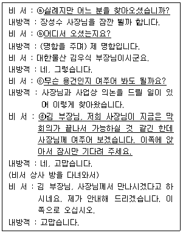
- ⓐ
- ⓑ
- ⓒ
- ⓓ
(정답률: 74%)
7. 다음 중 비서가 조직구성원들과의 관계를 맺는 태도나 행동으로 가장 적절하지 않은 것은?
- 비서는 일반 사원과의 교류가 적은 편이라 사내 모임에 적극적으로 참여하고 많은 이야기를 듣는 것이 좋다.
- 사내 모임 참여하며 상사의 개인적 취향이나 일상사를 공유하여 사내 구성원들이 상사에 대한 친밀도를 높일 수 있도록 한다.
- 모임 때 들었던 사내 직원들의 업무상 고충이나 애로사항 등을 상사에게 전달한다.
- 다른 비서와 상사 보좌에 대한 노하우를 서로 공유하여 업무 향상을 도모한다.
(정답률: 67%)
8. 상사의 해외 출장 업무를 지원하는 비서의 업무 태도로 가장 바람직하지 않은 것은?
- 항공사 사전 좌석 지정 서비스를 이용하여 상사의 선호 좌석을 미리 지정해 놓는다.
- 상사가 해외 출장 중 부득이하게 환승이 필요할 경우 공항내 라운지, 샤워룸 등의 편의시설이 있는지를 확인하고 상사가 공항 부대서비스를 활용할 수 있도록 보고한다.
- 상사가 다양한 항공 서비스를 경험할 수 있도록 예약 시지난 출장과 다른 항공사를 예약한다.
- 상사가 탑승수속을 원활히 할 수 있도록 사전 웹체크인을 한다.
(정답률: 84%)
9. 다음 중 비서의 일정관리 업무처리가 올바르지 않은 것을 모두 고르시오.
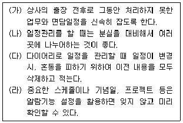
- (가), (나), (다)
- (가), (나), (라)
- (나), (다), (라)
- (가), (나), (다), (라)
(정답률: 79%)
10. 비서의 예약업무처리 방식으로 가장 적절하지 않은 것은?
- 예약 담당자의 이름을 기억하고, 친절하게 인사를 건네며 사소한 도움에도 감사를 전하는 비서의 태도가 예약 업무를 수행하는 데 도움이 될 수 있다.
- 예약을 진행하는 과정 가운데 변경 사항이 있거나 예약확약이 지체되는 경우 비서가 신속하게 대응 처리한 후, 최종결정사항만 상사에게 보고하는 것이 효율적이다.
- 예약 이력 정보 목록을 수시로 업데이트하고, 예약이 완료되면 예약 내용을 구체적이고 상세하게 기록하여 문서 보고 시활용한다.
- 상사가 외부 이동 중일 경우, 예약 상황을 문자 보고하여 상사가 추후 참고할 수 있도록 한다.
(정답률: 67%)
11. 다음 중 비서의 회의 지원업무로 가장 적절한 것은?
- 강사료는 깨끗한 지폐의 현금으로 지급하고, 수령인으로부터 수령증을 받아 경리과에 제출한다.
- 외부에서 많은 손님이 참석하는 대규모의 회의는 경비 절감을 위해 이메일로만 회의 일정을 통지한다.
- 참석 여부에 대한 회신율이 저조하여 비서가 연락하여 참석여부를 확인한다.
- 의제나 회의 순서를 작성할 때 집중도를 고려해서 복잡한 내용을 먼저 진행하도록 배열한다.
(정답률: 62%)
12. 비서가 국제회의 의전을 지원할 때 다음 중 올바른 것은?
- 축하만찬에서 주요 임원들이 앉을 헤드테이블 위에 착석자의 예약좌석카드(Reserved Table Card)를 연회장 담당자에게 요청하였다.
- 국제회의에 3개국의 초청 인사가 주제발표를 하게 되어 있어 공용어인 영어로 동시통역을 할 수 있도록 장비를 마련하도록 했다.
- 터키와 이란 등 여러 국가에서 온 초청 인사들이 참석하는 만찬 시에는 특정 국가의 문화와 종교적인 부분은 가급적 배제하고 중립적으로 행사를 준비한다.
- 여러 나라 국기를 한꺼번에 게양할 때는 국기의 크기나 깃대의 높이를 똑같이 한다.
(정답률: 51%)
13. 다음 중 일반적인 비즈니스 매너 원칙에서 가장 어긋나는 것은?
- 택시 승차 시 남성이 뒷문을 열어 남성이 안쪽에 먼저 탄다.
- 우리나라에서 MOU 협정식을 할 경우 양측의 국기 교차 시에는 청중이 앞에서 바라보았을 때, 왼쪽에 태극기가 오도록 하고 그 깃대는 외국기의 깃대 앞쪽에 위치하도록 한다.
- 행사 시 참석 인사에 대한 예우 기준은 선례에 따른 관행이 공식적인 서열 기준보다 우선한다.
- 만찬 시 식탁에서, 기침할 때에는 냅킨을 사용하지 않는다.
(정답률: 43%)
14. 다음 중 비서의 보고 방법 중 가장 적절한 것은?
- 보고 시에는 결론을 먼저 말하기 전 배경상황을 충분히 설명하여 상사의 이해를 돕는다.
- 전화로 보고를 할 경우 미리 내용을 요약해서 간단명료하게 보고하되, 중요한 부분은 반복한다.
- 문서 보고 시에는 이해가 잘되도록 가능한 자세하고 논리 정연하게 문장을 기술한다.
- 보고의 기본은 구두보고이므로 항상 구두보고를 먼저 한 후 불충분할 경우 문서보고를 한다.
(정답률: 61%)
15. 다음 중 지시업무 보고에 대한 가장 올바른 태도는?
- 지시한 사람이 직속 상사가 아닌 경우, 상사에게 꼭 보고할 필요는 없으나 지시한 상사에게는 반드시 보고해야 한다.
- 상사에게 구두 보고 시 상사에게 명확하게 전달되었는지를 위해 중간에 내용 확인을 한다.
- 상사의 지시를 받고 나오면 지시 내용의 중요도와 시간적 긴급성을 비서가 스스로 판단하여 업무 시작 여부를 결정한다.
- 상사에게 지시받은 업무가 끝나면 보고 기한이 남았다 하더라도 바로 보고한다.
(정답률: 58%)
16. 다음 회사의 경조사제도 관련 공지문에서 한자가 잘못 표기된 번호는?
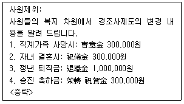
- 1
- 2
- 3
- 4
(정답률: 48%)
17. 상사의 신용카드 관리에 대한 비서의 업무처리로 가장 적절하지 못한 것은?
- 신용카드 사용한 후 받은 매출 전표는 매월 카드 명세서가 올 때까지 보관해 두었다.
- 신용카드 분실을 대비해 상사 파일에 신용카드 종류 및 유효기간, 번호 등을 기재해 두었다.
- 상사가 법인카드를 소지하지 않아 일단 현금으로 지급 후 상사 개인 이름으로 등록된 현금영수증을 발급받아 첨부하여 경리과에 제출하였다.
- 회사 규정상의 접대비 월 사용액의 상한선을 초과하지 않았는지 매출 전표를 확인한다.
(정답률: 67%)
18. 비서가 상사를 대신하여 조문을 가게 되었을 경우 비서의 태도로 가장 적절한 것은?
- 조객록에 상사의 소속과 이름을 적은 후, 옆에 비서의 직함과 이름을 기재하여 대신 왔음을 알린다.
- 상주의 종교의식에 맞추어 분향 또는 헌화, 절 또는 묵념을 한다.
- 상주에게 위로의 말과 함께 간단한 질문을 하여 돌아가서 상사에게 전한다.
- 상주가 입관식으로 자리를 비웠다면 기다렸다가 상주에게 직접 조의를 전달한다.
(정답률: 44%)
19. 비서직에 대한 설명으로 적절하지 않은 것은?
- 비서는 사무기술을 보유하고 직접적인 감독 하에 책임을 맡는 능력을 발휘하며, 창의력과 판단력으로 조직의 의사결정을 내리는 보좌인이다.
- 비서직은 정치, 종교, 기업, 금융, 법률, 의료, 교육 등 다양한 사업 조직으로의 취업이 가능하다는 장점이 있다.
- 비서는 긍정적 사고를 하며 조직 중심적 행동으로 조직에 기여할 수 있어야 한다.
- 비서는 회사에 대한 지식을 넓히며 회사 내 많은 부서 사람들과 원만한 업무관계를 유지하며 경영자적 의식과 사고를 지녀야 한다.
(정답률: 54%)
20. 이비서가 마케팅팀 이팀장과 나눈 대화 중 비서의 표현이 가장 적절한 것은?
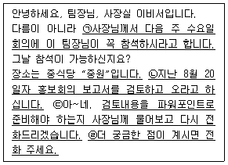
- ㉠
- ㉡
- ㉢
- ㉣
(정답률: 60%)
2과목: 경영일반
21. 다음 중 기업 및 경영자의 사회적 책임에 대한 설명으로 가장 적절하지 않은 것은?
- 경영자는 효율적인 기업경영활동을 통하여 기업이 유지·존속될 수 있도록 해야 한다.
- 기업은 사회적책임을 무시하고 이익을 추구하기만 해도 된다.
- 경영자는 다양한 이해집단과 관계를 맺고 있으며 이해집단간의 상충되는 이해를 원만히 조정해야하는 책임이 있다.
- 기업이 사회적 책임을 이행하면 좋은 평판을 얻게 되어 매출에 긍정적 작용을 가져올 수 있다.
(정답률: 71%)
22. 적대적 M&A의 위협을 받고 있는 기업의 경영권을 지켜주기 위해 나서는 우호적인 제3의 세력을 나타내는 용어로 다음 중 가장 옳은 것은?
- 흑기사
- 백기사
- 황금낙하산
- 황금주
(정답률: 50%)
23. 다음의 설명을 읽고 괄호에 들어갈 말로 가장 적합한 것은?
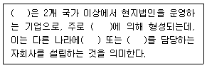
- 다국적기업, 해외간접투자, 투자, 소비
- 다국적기업, 해외직접투자, 생산, 판매
- 글로벌산업, 해외직접투자, 투자, 소비
- 글로벌산업, 해외간접투자, 생산, 판매
(정답률: 59%)
24. 프랜차이즈에 대한 설명으로 다음 중 가장 적합하지 못한 것은?
- 프랜차이즈계약은 본사가 가맹업체에게 일정지역에서 상호를 사용할 수 있는 권한과 제품을 판매하거나 서비스를 제공할 수 있는 권한을 판매하는 계약이다.
- 프랜차이즈는 개인기업, 파트너십, 회사의 형식이 가능하다.
- 맥도날드, 세븐일레븐, 홀리데이인 등이 대표적인 프랜차이즈업체이다.
- 프랜차이즈의 장점은 비교적 낮은 창업비용이다.
(정답률: 50%)
25. 다음의 대화내용에 나타난 기업형태와 가장 관련이 있는 것은?
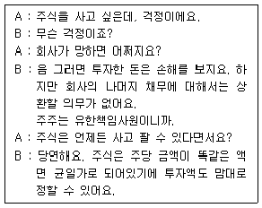
- 합명회사
- 합자회사
- 유한회사
- 주식회사
(정답률: 59%)
26. 다음 중 중소기업에 대한 설명으로 가장 적절하지 않은 것은?
- 중소기업은 경기변동에 대한 탄력성이 있어서 대기업보다 경기의 영향을 적게 받으며 수요변화에 적절히 대처할 수 있다.
- 중소기업의 기술수준은 대기업보다 낮은 편이지만 기술개발의 잠재력은 높게 나타난다.
- 중소기업은 동종 업종간의 경쟁이 대기업보다 적기 때문에 단기간에 높은 수익을 달성하기 쉽다.
- 중소기업은 대기업보다 조직구조가 단순하기 때문에 환경 변화에 유연성 있게 대응할 수 있다.
(정답률: 50%)
27. 다음 중 조직의 성과관리 시스템인 균형성과지표(BSC : Balanced Score Card)의 4가지 관점으로 가장 적합하지 않은 것은?
- 공급자관점
- 재무적관점
- 고객관점
- 내부프로세스관점
(정답률: 45%)
28. 다음은 지식경영 및 지식에 관한 설명이다. 다음 중 가장 설명이 바르게 연결된 것은?
- 지식은 암묵지와 형식지로 이루어져있으며, 암묵지는 문서나 매뉴얼처럼 외부로 표출된 지식을 의미한다.
- 조직에서 지식의 순환 중 사회화과정은 암묵지에서 암묵지로의 전환과정을 의미하며, OJT(on-the job training)를 한 예로 들 수 있다.
- 지식경영은 외부의 지식을 조직의 지식으로 창조하는 것을 의미하며 지식경영의 목표는 외부지식의 획득에 있다.
- 조직의 지식은 1회적인 순환과정으로 고도화하고 새로운 가치를 창조한다.
(정답률: 44%)
29. 다음은 여러 학자들의 동기부여이론을 설명한 것이다. 이 중 가장 적합하지 않은 것은?
- 매슬로우는 인간의 욕구를 생리적, 안전, 소속, 존경, 자아 실현의 5가지로 나누었으며, 초창기 이론은 저차원의 욕구가 만족되어야 고차원의 욕구를 추구한다고 한다.
- 맥그리거는 X, Y이론을 설명하였는데, X이론에 의하면 관리자는 종업원을 스스로 목표달성을 할 수 있는 존재라고 보았다.
- 허쯔버그는 위생-동기이론을 발표하였는데 위생요인은 방치하면 사기가 저하되기에 이를 예방요인이라고도 한다.
- 맥클랜드는 현대인은 주로 3가지 욕구 즉 권력, 친교, 성취욕구에 관심이 있다고 한다.
(정답률: 43%)
30. 마케팅활동에서 시장을 세분화할 때 다양한 기준으로 소비자집단을 구분할 수 있다. 다음 중 시장 세분화의 요건으로 가장 적절하지 않은 것은?
- 각 세분시장은 외부적 동질성과 내부적 동질성을 가지고 있어야 한다.
- 각 세분시장은 세분시장별로 그 규모와 구매력을 측정할 수 있어야 한다.
- 각 세분시장은 경제성이 보장될 수 있도록 충분한 시장규모를 가져야 한다.
- 세분시장에 있는 소비자들에게 기업의 마케팅활동이 접근 가능해야 한다.
(정답률: 46%)
31. 다음 중 보상관리에 대한 설명으로 가장 적절하지 않은 것은?
- 임금수준을 결정할 때 기업의 지불능력은 임금 상한선의 기대치가 된다.
- 임금관리의 공정성 확보를 위해 동일업종의 경쟁사의 임금수준을 고려한다.
- 직능급은 종업원의 직무수행능력을 기준으로 임금수준을 결정한다.
- 직무급은 연공급을 기초로 임금수준을 결정하며 직무의 난이도에 따라 별도의 수당을 지급한다.
(정답률: 38%)
32. 요즘 주택대출규제 등에 자주 등장하는 용어로 “총부채상환비율을 뜻하는 용어이며, 주택담보대출의 연간 원리금 상환액과 기타 부채의 연간이자 상환액의 합을 연소득으로 나눈 비율”을 의미하는 용어는 다음 중 무엇인가?
- DIY
- DTY
- DTA
- DTI
(정답률: 40%)
33. 아래의 표는 ㈜한국물산의 2017년 재무상태표(계정식)를 나타낸 자료이다. 다음 중 가장 올바르게 작성된 부분은?
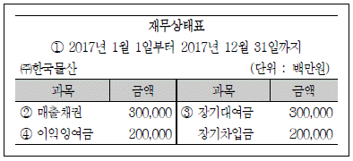
- 2017년 1월 1일부터 2017년 12월 31일까지
- 매출채권
- 장기대여금
- 이익잉여금
(정답률: 46%)
34. 다음의 설명에 해당되는 용어는 보기 중 무엇인가?
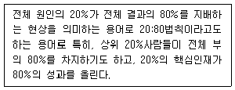
- 페레스트로이카 법칙
- 파레토 법칙
- 페이퍼컴퍼니 법칙
- 윔블던 법칙
(정답률: 56%)
35. 다음의 내용을 의미하는 광고를 표현하는 용어로 가장 옳은 것은?
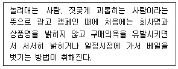
- 푸티지 광고
- 티저광고
- 인앱광고
- 리워드광고
(정답률: 57%)
36. 다음 중 인터넷 쇼핑몰에서 옷을 구매하는 것과 같이 인터넷을 이용하여 기업이 일반 소비자를 대상으로 재화나 서비스를 판매하는 전자상거래 모델을 나타내는 것은 다음 중 무엇인가?
- B2C
- B2B
- C2C
- G2B
(정답률: 56%)
37. 다음 중 테일러(Taylor)의 과업관리(과학적 관리법)에 대한 설명으로 가장 적합하지 않은 것은?
- 동작과 피로의 연구를 통해 작업단순화를 강조하였다.
- 최소의 노동과 비용으로 최대의 생산효과를 확보하는 최선의 방법과 최선의 용구를 발견하기 위해 생산공정을 최소 단위로 분배하여 이를 능률적 계획적으로 배치하는 방법을 연구하였다.
- 인간노동을 기계화하여 노동생산성을 높이는 데만 치중하여 기업의 인간적 측면을 무시하였다는 비판을 받았다.
- 작업과정에 능률을 높이기 위해 임금을 작업량에 따라 지급하는 등 여러 가지 합리적인 방법을 연구하였다.
(정답률: 33%)
38. 다음 중 타인을 위한 봉사에 초점을 두며 종업원, 고객 등을 우선으로 헌신하는 리더십은 무엇인가?
- 변혁적 리더십
- 카리스마적 리더십
- 서번트 리더십
- 슈퍼 리더십
(정답률: 61%)
39. 다음 중 연봉제과 연공제의 특성에 대한 설명으로 가장 옳은 것은?
- 연공제는 직무성과와 능력을 기준으로 본다.
- 연공제는 일을 기준으로 임금배분을 하는 임금제도이다.
- 연봉제는 근로의 질과 양에 대한 보상이다.
- 연봉제는 나이, 근속연수를 기준으로 하는 임금제도이다.
(정답률: 38%)
40. 제품을 생산할 수 있는 권리를 일정한 대가를 받고 외국기업에게 일정기간동안 부여하는 방식의 해외시장진출방법은 무엇인가?
- 라이센싱(licensing)
- 아웃소싱(outsourcing)
- 합작투자(joint venture)
- 턴키프로젝트(turn-key project)
(정답률: 49%)
3과목: 사무영어
41. Choose the thing that Michael should do after he receives the second email.
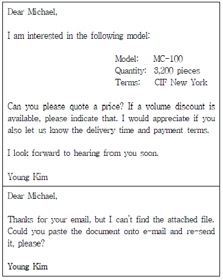
- Michael should send the attachment again via email.
- Michael should send the products which Kim orders.
- Michael should resend the attachment via express mail.
- Michael did his best so he doesn't have to do anything more.
(정답률: 44%)
42. Choose one which is the most appropriate department name for the blank.
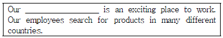
- Sales Department
- Advertising Department
- Purchasing Department
- Public Relations Department
(정답률: 35%)
43. Which English sentence is grammatically LEAST correct?
- 이 문제에 대해서 후속 조치를 해 주시겠습니까? Would you follow up on this matter?
- 될 수 있는 한 빨리 답장해 주시면 감사하겠습니다. We would appreciate a reply at your earliest convenience.
- 답장은 아래의 주소로 보내 주세요. Please reply to the following address.
- 협조해 주시면 감사하겠습니다. Your cooperation would appreciate.
(정답률: 38%)
44. Which of the followings are most appropriate for the blanks?
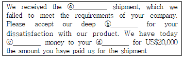
- ⓐ returned, ⓑ apologize, ⓒ remitted, ⓓ bank
- ⓐ returned, ⓑ apology, ⓒ remitted, ⓓ account
- ⓐ refunded, ⓑ apology, ⓒ returned, ⓓ bank
- ⓐ refunded, ⓑ apologize, ⓒ returned, ⓓ account
(정답률: 40%)
45. What kind of letter is this?
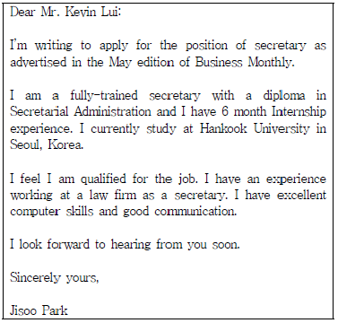
- Announcement Letter
- Cover Letter
- Public Relations Letter
- Requirement Letter
(정답률: 46%)
46. What is the main purpose of this letter?
- In order to understand the number of attendees
- In order to let all the members know the meeting agenda
- In order to invite guests to the meeting
- In order to inform the vice president of the public affairs meeting
(정답률: 29%)
47. Fill in the blank with the BEST word.
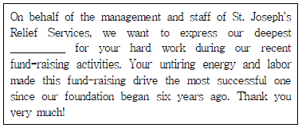
- apology
- appreciation
- invitation
- congratulations
(정답률: 43%)
48. What is the main purpose of the email?
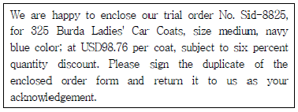
- to place an order
- to take an order
- to calculate the sum of payment
- to sell the products
(정답률: 21%)
49. Below is the address of the receiver in the envelope. Put them in a CORRECT order.
- Mr. Jay Brown
President
ICU Corporation
53 Independence Street
Denver, SU 33487 - Denver, SU 33487
53 Independence Street
ICU Corporation
President
Mr. Jay Brown - ICU Corporation
President
Mr. Jay Brown
Denver, SU 33487
53 Independence Street - President
Mr. Jay Brown
Denver, SU 33487
53 Independence Street
ICU Corporation
(정답률: 52%)
50. Which is LEAST correct?
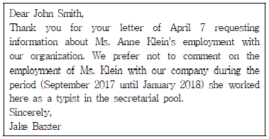
- John asked the information on Ms. Anne Klein.
- Ms. Klein worked as a typist in Jake's company.
- Jake refuses to give any comment about Ms. Klein.
- Jake is a credit manager.
(정답률: 32%)
51. Which of the followings is correct in order?
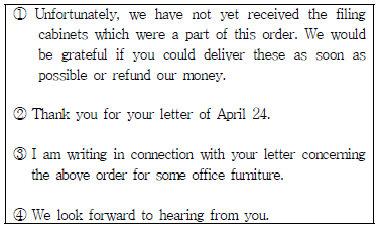
- ① - ② - ③ - ④
- ② - ③ - ① - ④
- ③ - ① - ④ - ②
- ① - ③ - ④ - ②
(정답률: 52%)
52. Which of the following is the least appropriate expression for the blank?
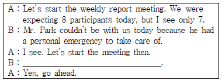
- Can I suggest something, please?
- May I add something?
- Can I say something?
- Do you have anything to add?
(정답률: 36%)
53. Choose the MOST appropriate expression.
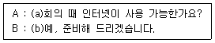
- (a) Is Internet available at the meeting? (b) Yes, I'll have it ready.
- (a) Is Internet useful at the meeting? (b) Yes, I'll make it to ready.
- (a) Will Internet use at the meeting? (b) Yes, I'll get it being ready.
- (a) Is Internet used for the meeting? (b) Yes, I'll have it to ready.
(정답률: 48%)
54. What is the main topic of the following conversation?
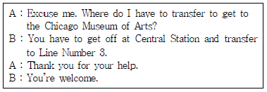
- Renting a car
- Invitation to a museum
- Taking public transport
- Check in
(정답률: 47%)
55. Which of the following is the most appropriate expression for the blank?
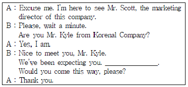
- Could you help me?
- I’ll show you the way.
- Would you like something to drink?
- I’ll get it for you.
(정답률: 45%)
56. Choose one pair of dialogue which does not match correctly each other.
- A : Thank you for coming all the way from New York. B : You’re welcome. We’re looking forward to working with you.
- A : I’m sorry to keep you waiting.The traffic was terrible. B : That’s okay. I just got here.
- A : It is right on the main street, so it was easy to find. B : I’m glad to hear that.
- A : Why don’t we have a drink after the meeting? B : I really enjoyed talking with you.
(정답률: 36%)
57. What are the BEST expressions for (a) and (b)?
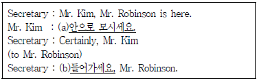
- (a) Take him out. (b) Please go ahead.
- (a) Bring him out. (b) Please go on.
- (a) Send him in. (b) Please go right in.
- (a) Force him in. (b) Please go by.
(정답률: 54%)
58. According to the following conversation, which is most appropriate for the blank?
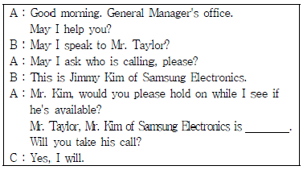
- on the phone
- on another line
- out there
- taking a call
(정답률: 36%)
59. Fill in the blanks with the best word(s).
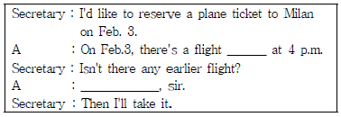
- starting - I'm not afraid
- leaving - I'm afraid not
- arriving - I'm afraid not
- going - I'm not afraid
(정답률: 40%)
60. According to the following flight details of Mr. M. Y. Lee, which is true?
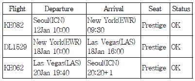
- Mr. Lee leaves Seoul for New York on KE062 on January 12.
- Mr. Lee Arrives in Seoul on January 20.
- Mr. Lee flies to New York on business class.
- Mr. Lee arrives at the John F. Kennedy Airport on January 13.
(정답률: 35%)
4과목: 사무정보관리
61. 결재의 역기능에 대한 설명으로 가장 옳지 않은 것은?
- 여러 단계의 검토 과정을 거쳐 결재에 이르기 때문에 의사 결정이 지연되기 쉽다.
- 상위자의 결정에 의존하기 때문에 하위자가 자기책임하에 창의성을 발휘하기 어렵다.
- 결재과정을 통해 직원의 직무수행에 대한 통제가 가능하다.
- 상위자에게 결재안건이 몰리는 경우, 상세한 내용 검토 없이 문구 수정 정도에 그칠 수 있다.
(정답률: 30%)
62. 다음과 같이 문서의 수발신 및 전달 업무를 진행하고 있다. 가장 적절하지 않은 업무처리를 한 비서는?
- 권비서는 임원 모두가 공통적으로 알아야 할 문서라서, 모든 임원에게 원본으로 문서를 전달하였다.
- 배비서는 수신문서를 상사에게 전달할 때, 회신을 쓰는데 도움이 될 자료도 함께 전달하였다.
- 안비서는 상사에게 초청장을 전달할 때 주요 부분에 형광펜으로 밑줄을 그어서 상사가 내용 파악이 쉽게 했다.
- 장비서는 상사의 이메일 확인을 위임받아서 시간을 정해두고 확인해서 오늘 중 처리할 것이 누락되지 않도록 하였다.
(정답률: 55%)
63. 아래 문서의 하단부분에서 알 수 있는 내용으로 가장 적절하지 않은 것은?
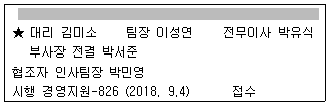
- 이 문서는 경영지원팀에서 기안해서 결재받은 시행문이다.
- 이 문서는 부사장 전결을 받은 후 인사팀에 협조를 받은 문서이다.
- 이 문서의 기안자는 경영지원팀의 김미소 대리이다.
- 이 문서는 직무전결 규정에 의해서 부사장 전결로 처리되었다.
(정답률: 34%)
64. 다음 민원우편에 관한 설명으로 가장 옳지 않은 것은?
- 정부 각 기관에서 발급하는 민원서류를 우체국을 통해 신청한다.
- 사립학교 졸업증명서를 민원우편으로 발급받을 수 있다.
- 민원서류는 내용증명으로 취급되어 송달된다.
- 이용대상 민원서류는 2018년 8월 현재 기준으로 267종류이다.
(정답률: 34%)
65. 다음 중 띄어쓰기가 바르지 않은 것은?
- 10여 년, 100여 미터, 100여 점
- 10주가량, 30세가량, 300년가량
- 한 그루, 두 마리, 세 대
- 3개월이내, 20세이상, 50명정도
(정답률: 47%)
66. 다음과 같은 경우 작성해야 할 문서의 종류에 해당하지 않은 것은?
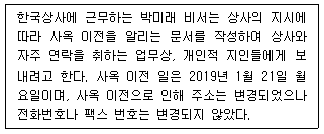
- 대외문서
- 의례문서
- 안내장
- 거래문서
(정답률: 47%)
67. 한국주식회사는 2018년 3월 1일자로 새로 대표이사가 취임하면서, 취임축하 인사 및 축하 화분을 많이 받았다. 대표이사 비서는 축하에 대한 감사장을 작성하고 있다. 다음 보기 중 이 감사장에 사용할 수 있는 가장 적절한 표현은?
- 결실의 계절을 맞이하여 귀사의 무궁한 발전을 기원합니다.
- 보내주신 10만원 상당의 동양란을 소중하게 잘 받았습니다.
- 이는 모두 저의 부덕의 소치로 인한 것입니다.
- 직접 찾아뵙고 인사드려야 하오나 서면으로 대신함을 양해해 주시기 바랍니다.
(정답률: 53%)
68. 다음 명함을 회사명순으로 정리하고 있다. 이때 올바른 순서대로 정리한 것은?
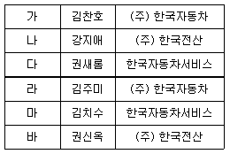
- 나 – 다 – 바 – 라 – 가 - 마
- 라 – 가 – 나 – 바 – 다 - 마
- 라 – 가 – 다 – 마 – 나 - 바
- 라 – 가 – 마 – 다 – 바 - 나
(정답률: 33%)
69. 다음 중 문서 정리 순서가 올바른 것은?
- 주제결정 – 검사 – 주제표시 - 분류 및 정리
- 검사 – 주제결정 – 주제표시 - 분류 및 정리
- 주제결정 – 주제표시 – 검사 - 분류 및 정리
- 검사 – 주제표시 – 주제결정 - 분류 및 정리
(정답률: 40%)
70. 각 비서들이 다음과 같이 전자 문서의 특징에 대해 설명하고 있다. 이 중 가장 적절하지 않게 설명한 것은?
- 박비서 : 전자 문서의 수신 시기는 수신자가 관리하는 정보처리 시스템에 입력될 때입니다.
- 김비서 : 일반 스캐너로 생성된 이미지 문서(스캐닝 문서)도 종이 문서와 동일한 법적 효력을 보장받을 수 있습니다.
- 최비서 : 전자 문서 국제 표준은 ‘PDF’ 문서입니다.
- 이비서 : 전자 문서라고 문서로서의 효력이 부인되지 않습니다.
(정답률: 41%)
71. 다음 중 전자 문서에 속하는 파일의 확장자를 모두 고른 것은?
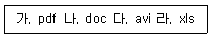
- 가, 나, 라
- 가, 나
- 가, 나, 다, 라
- 가
(정답률: 36%)
72. 다음 글을 읽고 빈 칸에 적당한 단어로 짝지어진 것을 고르시오.
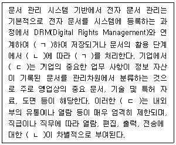
- ㄱ - 암호화, ㄴ - 등급
- ㄱ - 암호화, ㄷ - 특별 문서
- ㄴ - 권한, ㄷ - 보안 문서
- ㄴ - 등급, ㄷ - 특별 문서
(정답률: 42%)
73. 랜섬웨어 감염 예방이나 대비책으로서 가장 적절하지 않은 것은?
- 모든 소프트웨어는 최신버전으로 정기적으로 업데이트한다.
- 백신을 설치하고 최신버전으로 업데이트를 정기적으로 한다.
- 중요한 파일은 클라우드나 외장하드에 정기적으로 백업해둔다.
- 랜섬웨어는 모바일을 통해서는 유포되지 않으므로 주로 스마트폰을 이용한다.
(정답률: 62%)
74. 다음 중 상사가 사용하는 스마트 디바이스 관리가 가장 적절하지 못한 비서는?
- 김비서는 상사가 사용하는 스마트 디바이스의 제품별 특징과 운영 체제를 파악하고 있다.
- 최비서는 상사의 스마트 디바이스에서 사용 중인 중요한 자료를 드롭박스에 별도로 보관하고 있다.
- 이비서는 상사의 스마트 디바이스 안의 애플리케이션은 자료 유출의 위험으로 업데이트하지 않는다.
- 박비서는 스마트 디바이스의 휴대용 배터리 충전기를 준비하여 상사 외출 시 제공한다.
(정답률: 66%)
75. 다음은 주 52시간 근무제와 관련된 기사이다. 이 기사를 통해서 유추할 수 있는 내용으로 가장 적절한 것은?
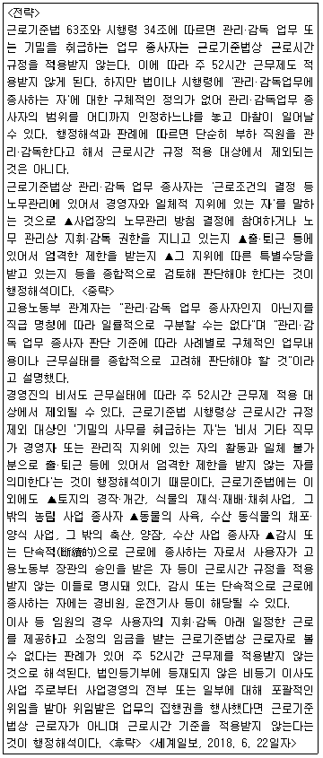
- 부하직원을 관리 감독하는 사람은 직급이나 직위와 무관하게 주 52시간 근무 적용대상에서 제외된다.
- 경영진의 비서는 모두 기밀의 사무를 취급하므로 주 52시간 근무 적용대상에서 제외된다.
- 주 52시간 근무 적용대상 제외는 출퇴근 시간을 엄격하게 제한받지 않은 경우라면 거의 적용된다.
- 법인 등기부에 등재된 임원의 경우 근로기준법상 근로자로 볼 수 없으므로 근로시간 기준을 적용받지 않는다.
(정답률: 31%)
76. 다음 그래프를 통해서 알 수 있는 내용으로 가장 적절하지 않은 것은?
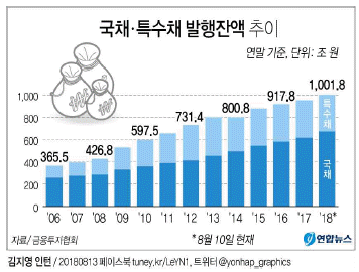
- 국채 발행잔액은 매년 꾸준히 증가해 왔다.
- 국채 발행잔액은 항상 특수채 발행잔액보다 많았다.
- 2017년 말 기준으로 10년 전보다 국채ㆍ특수채 발행잔액이 2배 이상 증가했다.
- 이 그래프는 100% 누적 막대 그래프로서 합계의 시간적 추이와 각 항목의 변화를 동시에 볼 수 있게 해준다.
(정답률: 41%)
77. 다음 중 신문 스크랩 방법이 적절하지 않은 것을 모두 고르시오.
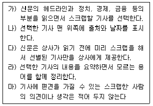
- 가, 나, 다, 라, 마
- 나, 다, 라,
- 가, 라, 마
- 다, 마
(정답률: 50%)
78. 다음 설명에 해당하는 적절한 용어는?
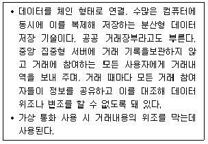
- 클라우드
- 블록체인
- 엠피코인
- 비트코인
(정답률: 54%)
79. 일반적으로 무선랜 이용을 위해서 설치되는 무선공유기에서 제공하는 보안기술이 아닌 것은?
- WEP
- WAP
- WPA
- WPA2
(정답률: 35%)
80. 다음 인터넷 주소를 통해 유추할 수 있는 기관의 특징으로 올바르지 않은 것은?
- www.XXX.edu : 교육기관
- www.XXX.net : 네트워크 관련 기관
- www.XXX.org : 비영리기관
- www.XXX.gov : 군사기관
(정답률: 52%)